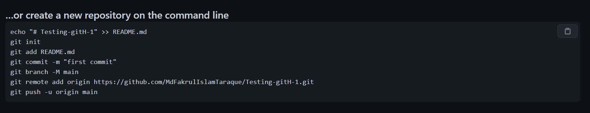

Learning Git and github is as important as breathing in development lifecycle. So we should learn this very carefully
There are some rules to create a new repository from local PC to the github repository
There are also some rules to add already existing local repository to the remote github repository. We will learn those later.